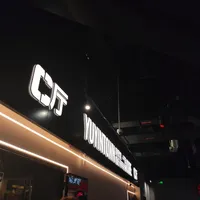
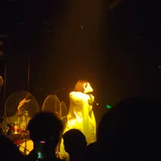

因为加班，所以晚上想去livehouse除除班味。在为数不多的没有售罄的演出中，看到了chainhaha。我一开始并没有决定好要不要去，直到我听了她的《圣火》，开头两个“娒”，让我意识到这个音乐人的歌中有温州的色彩。于是在前往公司的地铁上我购买了她今晚的演出。

可能是我看过的live偏少，第一次见到在台下观众围绕中演出，配上她歌曲中祭祀感，沉浸感十足。只是在圈外的观众实在难以看到演出者，未免有些气馁。好在第一首歌结束后她便回到了舞台。
不得不说，她的舞台设计着实不错，用有限的设备通过镜子和灯光展现出梦幻神秘的氛围，她的服装也是圣洁又异质，会让我联想到《丝之歌》里的角色。

她的音乐我认为还是挺不错的，其中几首也有爵士的味道在里头，比较戳中我。不过让我惊讶的还是这位30.7岁的女士依旧给人一种纯真的感觉，与她的美学风格形成极大的反差，就像是那种会很兴奋分享自己感受的孩子。
在演出接近尾声时，我忽然涌起一种悲伤的感觉。不知为何，主唱和她的演出让我体会到一个人要经历数不清的苦痛才能成为现在的自己，回首望去尽是伤痕累累，但最终依旧成为闪耀的自身。